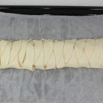
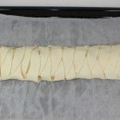

Una tarde lluviosa, frío que pela en la calle, sin ganas de salir de casa…, es el momento perfecto para hacer unas deliciosas galletas, no os parece?
En menos de una hora podéis estar disfrutando de un chocolate caliente, un riquísimo café o un delicioso té con leche acompañados de unas de las galletas más ricas que he preparado nunca.
Facilísimas de hacer, y seguro que los peques querrán echaros una mano. Vamos con la receta…
Ingredientes
125 gr. de mantequilla a temperatura ambiente
250 gr. de harina de repostería
60 gr. azúcar glas
1 cucharadita de postre de esencia de vainilla
1 huevo
2 cucharadas soperas de arándanos secos
Preparación
Lo primero que vamos a hacer es tamizar o pasar por un colador la harina y ponerla en un bol.
Batimos el huevo en un cuenco muy poco, lo suficiente para romper la yema y mezclarla con la clara.
Añadir al bol en el que tenemos la harina, la mantequilla en cuadraditos, el azúcar, los arándanos, el huevo y la esencia de vainilla. Amasar con las manos bien limpias hasta unirlo todo.
Queda una masa muy quebradiza, no os preocupéis, unirla en una bola y colocarla sobre un papel de horno. Poner otro papel de horno encima y pasar el rodillo para estirar la masa, que quede a una altura aproximada de 1/2 centímetro. Colocar la masa estirada entre los dos papeles en una bandeja que quepa en la nevera y dejar enfriar media hora.
Precalentamos el horno arriba y abajo a 180°.
Sacamos la masa de la nevera, retiramos el papel que la cubre y cortamos las galletas con la forma que más os guste. Si no tenéis cortador de galletas podéis hacerlo con un cuchillo, con el borde de un vaso, con un aro de emplatar pequeño, o recortando con cuidado un segmento de una botella de agua pequeña. Con la masa sobrante hacemos lo mismo que al principio, amasamos, estiramos, enfriamos y cortamos, hasta que se nos acabe.
Ponemos las galletas en una bandeja de horno forrada con papel y horneamos durante 12 minutos, justo cuando empecemos a ver que se doran un poco los bordes. Las sacamos una a una ayudándonos de una espátula o espumadera y las disponemos sobre una rejilla para que se enfríen.
Una vez frías, pueden espolvorearse con azúcar glas.
fuente: Rosaibiza
Resultado
Unas riquísimas galletas de mantequilla, que resultan maravillosas con el sabor y la textura de los arándanos. Si no os gustan éstos, o no los encontráis, podéis sustituirlos por nueces troceadas, gotas de chocolate o cualquier otra fruta desecada troceada. A mí me salieron dos bandejas para hornear, unas 35 galletas.
")
")
")
")
")
")
Tiempo: 40 minutos
Dificultad: 2/5
Digestión: 3/5
Precio: 3€
") 



")


")
")
")
")
")
")
")
")